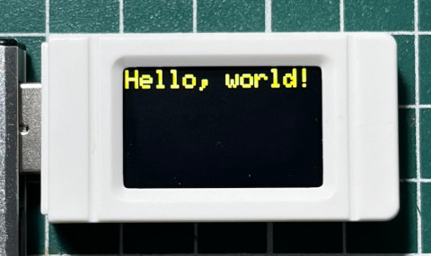

參考資訊：
https://www.waveshare.com/esp32-s3-geek.htm
https://github.com/LaZorraTech/ESP32-and-ST7789-135x240-LCD-Display
步驟如下：
1. 連接ESP32到PC
2. 執行如下命令
$ cd $ arduino-cli sketch new blink $ vim blink/blink.ino
#include <Arduino.h>
#include <Adafruit_GFX.h>
#include <Adafruit_I2CDevice.h>
#include <Adafruit_ST7789.h>
#include <SPI.h>
#define TFT_MOSI 11
#define TFT_SCLK 12
#define TFT_CS 10
#define TFT_DC 8
#define TFT_RST 9
Adafruit_ST7789 tft = Adafruit_ST7789(TFT_CS, TFT_DC, TFT_RST);
void setup(void) {
tft.init(135, 240, SPI_MODE0);
tft.setRotation(3);
tft.fillScreen(ST77XX_BLACK);
tft.setCursor(0, 0);
tft.setTextColor(ST77XX_YELLOW);
tft.setTextSize(3);
tft.println("Hello, world!");
}
void loop() {
}
$ arduino-cli compile --fqbn esp32:esp32:esp32s3 blink
$ arduino-cli board list
Port Protocol Type Board Name FQBN Core
/dev/ttyACM0 serial Serial Port (USB) ESP32 Family Device esp32:esp32:esp32_family esp32:esp32
$ arduino-cli upload --port /dev/ttyACM0 --fqbn esp32:esp32:esp32s3 blink
esptool.py v4.6
Serial port /dev/ttyACM0
Connecting...
Chip is ESP32-S3 (revision v0.2)
Features: WiFi, BLE
Crystal is 40MHz
MAC: 84:fc:e6:51:8a:e0
Uploading stub...
Running stub...
Stub running...
Changing baud rate to 921600
Changed.
Configuring flash size...
Flash will be erased from 0x00000000 to 0x00004fff...
Flash will be erased from 0x00008000 to 0x00008fff...
Flash will be erased from 0x0000e000 to 0x0000ffff...
Flash will be erased from 0x00010000 to 0x0005ffff...
Compressed 19504 bytes to 12970...
Writing at 0x00000000... (100 %)
Wrote 19504 bytes (12970 compressed) at 0x00000000 in 0.4 seconds (effective 416.7 kbit/s)...
Hash of data verified.
Compressed 3072 bytes to 146...
Writing at 0x00008000... (100 %)
Wrote 3072 bytes (146 compressed) at 0x00008000 in 0.1 seconds (effective 360.2 kbit/s)...
Hash of data verified.
Compressed 8192 bytes to 47...
Writing at 0x0000e000... (100 %)
Wrote 8192 bytes (47 compressed) at 0x0000e000 in 0.1 seconds (effective 532.2 kbit/s)...
Hash of data verified.
Compressed 327200 bytes to 184997...
Writing at 0x00010000... (8 %)
Writing at 0x0001bc24... (16 %)
Writing at 0x0002702f... (25 %)
Writing at 0x0002c7c2... (33 %)
Writing at 0x0003209d... (41 %)
Writing at 0x00037961... (50 %)
Writing at 0x0003d47e... (58 %)
Writing at 0x00042d6e... (66 %)
Writing at 0x000480f7... (75 %)
Writing at 0x0004d729... (83 %)
Writing at 0x00056054... (91 %)
Writing at 0x0005e0b4... (100 %)
Wrote 327200 bytes (184997 compressed) at 0x00010000 in 2.8 seconds (effective 921.9 kbit/s)...
Hash of data verified.
Leaving...
Hard resetting via RTS pin...
New upload port: /dev/ttyACM0 (serial)
完成
